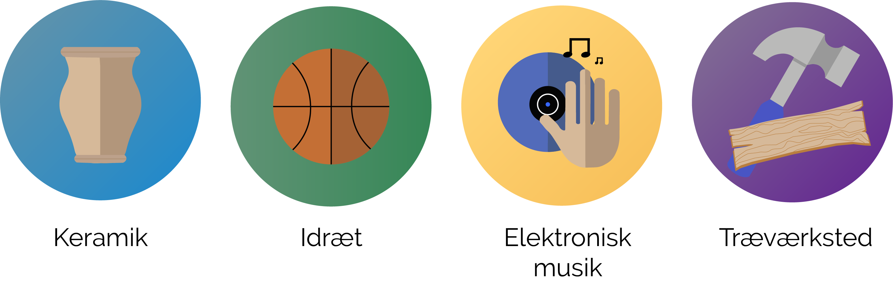

Få op til 6 forskellige fag i løbet af året. Valgfag vælges 3 gange årligt, hvor der vælges 2 fag pr. gang. Disse foregår 2 x 3 timer om ugen.
Eriksminde efterskole har en lang historie og hertil knyttet nogle traditioner og værdier, som vi vægter højt. Vores værdigrundlag bygger på demokrati, fællesskab og ligeværd. Vi har især frisind i fokus og vægter den åbne samtale højt. Det betyder at her kan enhver udtrykke, hvad vedkommende mener. På Eriksminde bliver man gennem skoleåret dannet og skaber sociale relationer der varer hele livet. Man får udviklet sine personlige kompetencer for at indgå i fællesskaber. Det betyder også, at vores elever lærer at indgå i demokratiske sammenhænge, hvor samtalen er central. Det gælder både ude i samfundet, men også i fagene på skolen.
Fakta
Eriksminde efterskole er en almen efterskole med høje ambitioner inden for de enkelte fag. Vi har fokus på de jordnære relationer – menneske til menneske. Derudover er vi hjemlige, hvilket vil sige at vi dyrker den nære atmosfære. Vi er stadig verdensorienteret og vores kernefortælling bygger på hovedbegreber som filosofi, forundring, æstetik, poesi, tillid og leg. Vælger du Eriksminde, så vælger du skolen fordi, du vægter efterskoleoplevelsen ligeså højt som fagene. Der er ikke fokus på ét fag, men på alsidigheden. Her på efterskolen er der plads til alle og at lære noget nyt. Man behøver ikke at have haft den store erfaring inden for et område, for at kunne begynde på Eriksminde.